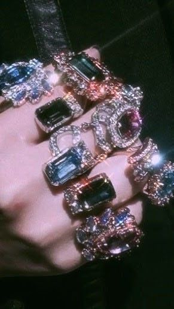
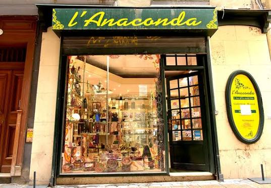
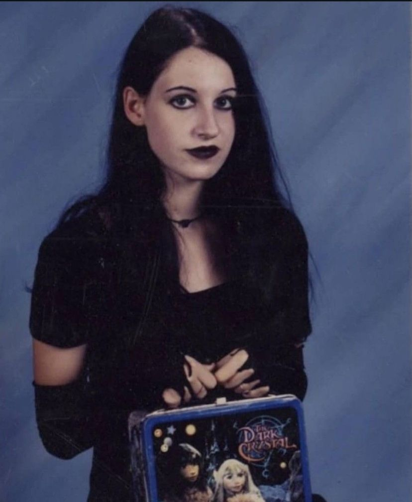

Avec tes trois amies, Emma, Soline et Aude, vous vous rendez à la place du Castillet, l'ancienne prison de la ville. Orné de briques rouge sang, le monument se dresse dans le paysage coloré du sud et reflète les turpitudes de son trouble passé. Tu as toujours adoré les vieilles bâtisses de ta ville qui ourlent les pourtours du centre ou magnifient ses discrètes placettes. Tu ne cesses de te demander ce que ces murs renferment comme secrets. A l'instar d'Emma, ton amie gothique que tu as toujours admirée, mais qui cache ses avant-bras avec ses gilets en dentelle noire...
Exposées aux quatre vents, vous avancez dans la direction de la bijouterie la plus mystique de la ville. Aude en tête du peloton, rabat une mèche couleur miellée derrière son oreille aux multiples piercings. Soline la suit de près, et toutes deux avancent fièrement vers la rue de la cloche d'or.
Soline et toi avez partagé la même enfance, les mêmes jeux fantasques, et votre amitié auparavant exclusive a commencé à s'ouvrir sur le monde extèrieur. C'est en 2nde qu'Emma et Aude ont consolidé votre petit quatuor de sorcières en formation !
La brise automnale te porte le long de la rue de la loge, puis de
la cloche d'or jusqu'à cette vitrine miroitante de pierres
précieuses. Vous êtes arrivées à l'Anaconda.

Aude pousse la porte et une clochette tintinnabule dans toute la boutique en annonçant votre présence. Un homme d'une cinquantaine d'années avec un regard doux vous sourit et vous accueille chaleureusement. Un nuage d'encens indien vous porte naturellement jusqu'aux bijoux en ambre. C'est la spécialité de la boutique. Tu n'as pas forcément besoin d'un bijou. Tu portes déjà ton pendentif en forme de dragon que tu as acheté l'an dernier au même endroit, et tes mains sont cerclées d'argent et de turquoise. Mais si cette pierre correspondait à ton enfance, à tes jeux avec Soline où vous vous preniez pour des sirènes, à barboter dans le lac ou à la mer, aujourd'hui tu sens qu'il te faut une nouvelle pierre pour t'accompagner au quotidien. La turquoise est belle et positive, mais en grandissant, tu as commencé à nourrir une fascination pour les couleurs plus sombres, les poètes romantiques et les films d'horreur. Et tu sens bien que cette turquoise ne matche plus vraiment avec ton énergie changeante.

Soline, elle, craque pour un pendentif en forme de gouttelette
d'ambre,
Aude a jeté son dévolu sur un piercing pour nombril
avec un brillant rouge sang,
Emma, quant à elle, a déjà
chaussé une bague d'argent en forme de chouette.
Tu hésites entre une bague surmontée d'un quartz d'améthyste et un pendentif plus léger en péridot clair.
Si tu prends la bague en améthyste, tourne à la page 3.
Si tu
prends le pendentif en péridot, tourne à la page 15.